Every AquaTrajectories plotting function — visual atlas
Source:vignettes/articles/all-plot-functions.Rmd
all-plot-functions.RmdPlot function atlas: all 22 visualizations
Coverage: 22 / 22 exported aqt_plot_*
functions from the published R API. 16 native base-R outputs are
rendered through the actual functions below; the six
optional rgl visualizations use explicitly labeled 2D
projections of the same invented input, because a headless
static documentation build cannot faithfully substitute an interactive
rgl scene. The documented native rgl call is
provided for each.
Each figure card links directly to its reproducible example, function manual, and version-pinned R implementation. The complete Rmd remains website-development source; the implementation links correspond to the released v0.1.1 API.
All plots use invented synthetic coordinates, synthetic study designs, or synthetic plotting fixtures, not real GoPro frames, biological feeding reference labels, physical surveyed underwater targets, or treatment effects. These examples are for software teaching. They cannot certify fish detection, calibrated XYZ accuracy, uncertainty coverage, animal welfare or causal inference.
Showing 22 of 22
Jump to a specific plotting function (22)
aqt_plot_paths() aqt_plot_path3d() aqt_plot_calibration_comparison() aqt_plot_changepoints() aqt_plot_ensemble2d() aqt_plot_ensemble3d() aqt_plot_feeding_states() aqt_plot_grid_pca() aqt_plot_heading_rose() aqt_plot_joint_scene_cloud() aqt_plot_joint_scene_cloud3d() aqt_plot_occupancy_timeseries() aqt_plot_reconstruction_qc() aqt_plot_recurrence() aqt_plot_school3d() aqt_plot_school_dynamics() aqt_plot_speed_response() aqt_plot_tank_changes() aqt_plot_tank_projection() aqt_plot_tank_scene3d() aqt_plot_trajectory_storyboard3d() aqt_plot_voxel3d()
aqt_plot_paths()
2D trajectory plot
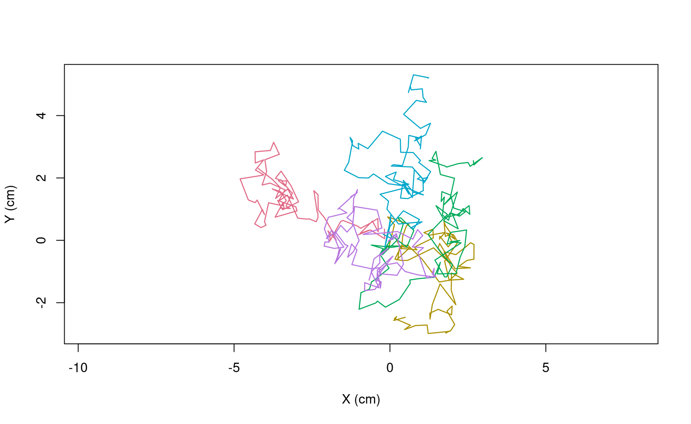
Direct native output from the package’s plotting function.
Interpretation boundary: Tracks are simulated in tank/cm units; labels are camera-local.
Adjust parameters in the synthetic browser playground — Adjust fish count and path duration. Browser previews are not native R plots; the linked R recipe executes the released function.
Reproduce this example
# Run the fixture setup from this page's source Rmd first.
aqt_plot_paths(toy2)aqt_plot_path3d()
3D trajectory paths
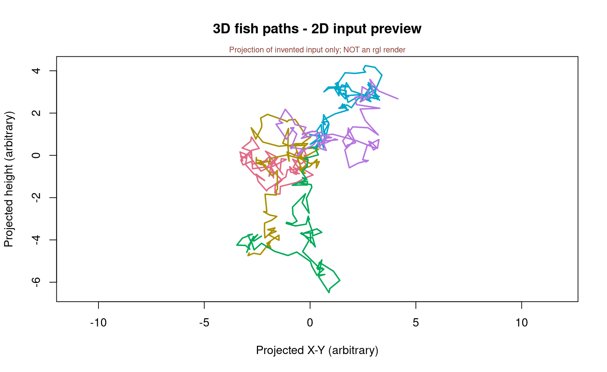
Native 3D function: aqt_plot_path3d(toy3). The displayed
figure is only an orthographic input preview; rgl is
required to view the actual plot. Optional native rgl
function: aqt_plot_path3d(toy3) (requires
rgl and physical XYZ semantics where applicable). This page
does not pretend the above projection is its native
output.
Interpretation boundary: Invented XYZ coordinates do not establish underwater reconstruction accuracy.
Reproduce this example
# Run the fixture setup from this page's source Rmd first.
aqt_plot_path3d(toy3)aqt_plot_calibration_comparison()
Held-out XYZ calibration comparison
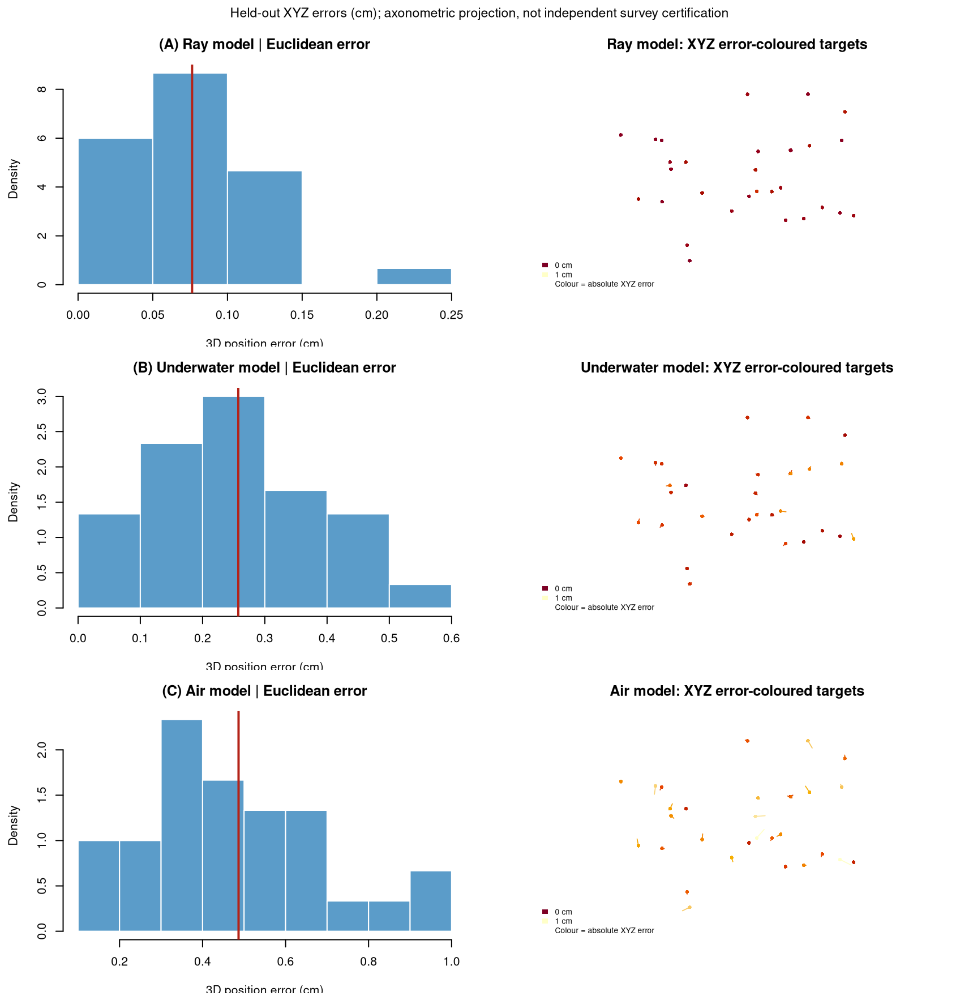
Native multi-panel calibration figure based on synthetic held-out reference coordinates.
Interpretation boundary: Reference positions are fabricated for teaching; no real calibration is certified.
Reproduce this example
# Run the fixture setup from this page's source Rmd first.
aqt_plot_calibration_comparison(calibration, units = 'cm')aqt_plot_changepoints()
Change-point diagnostics
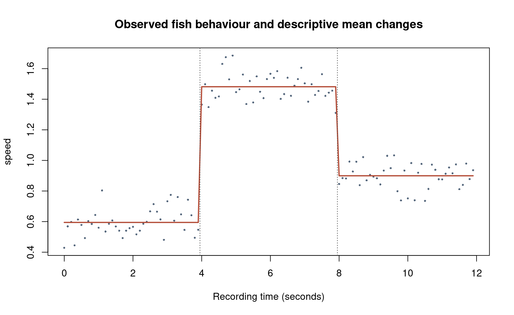
Native plot from aqt_state_changepoint() on an invented
signal.
Interpretation boundary: Descriptive mean changes are not automatically biological state changes.
Reproduce this example
# Run the fixture setup from this page's source Rmd first.
aqt_plot_changepoints(cp_fit)aqt_plot_ensemble2d()
2D measurement-error scenarios
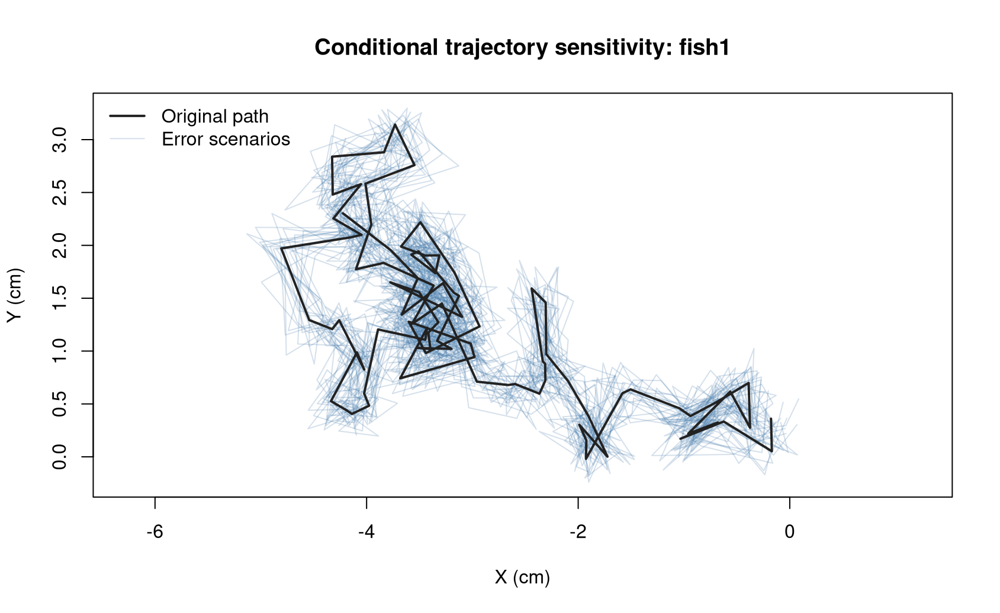
Native conditional scenario paths with original trajectory overlay.
Interpretation boundary: Not a calibrated predictive interval, posterior or independent measurement.
Adjust parameters in the synthetic browser playground — Explore assumed positional error and correlation. Browser previews are not native R plots; the linked R recipe executes the released function.
Reproduce this example
# Run the fixture setup from this page's source Rmd first.
aqt_plot_ensemble2d(ensemble2, "S01", "SIM", "fish1", n_draws = 20L)aqt_plot_ensemble3d()
3D measurement-error scenarios
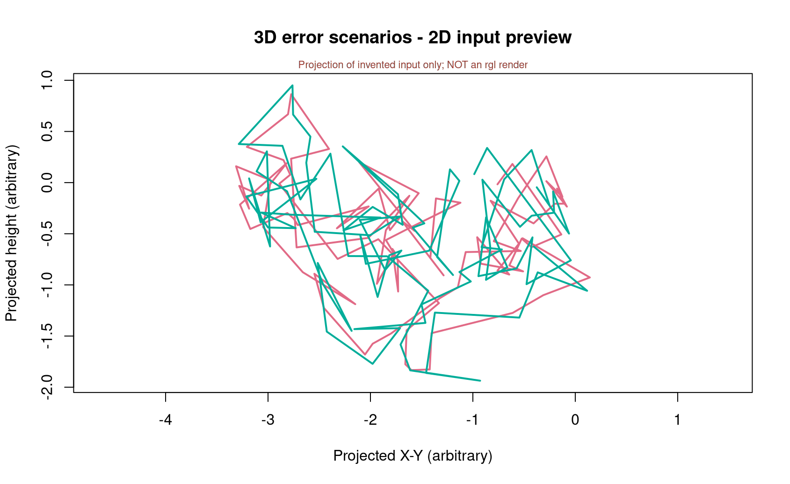
Native 3D function:
aqt_plot_ensemble3d(ensemble3, 'S01', 'SIM', 'fish1').
Preview shows just one scenario as a 2D projection, not the rgl scene.
Optional native rgl function:
aqt_plot_ensemble3d(ensemble3, 'S01', 'SIM', 'fish1')
(requires rgl and physical XYZ semantics where applicable).
This page does not pretend the above projection is its
native output.
Interpretation boundary: Conditional noise assumptions are not independently validated uncertainty coverage.
Reproduce this example
# Run the fixture setup from this page's source Rmd first.
aqt_plot_ensemble3d(ensemble3, 'S01', 'SIM', 'fish1')aqt_plot_feeding_states()
Descriptive feeding-index phases
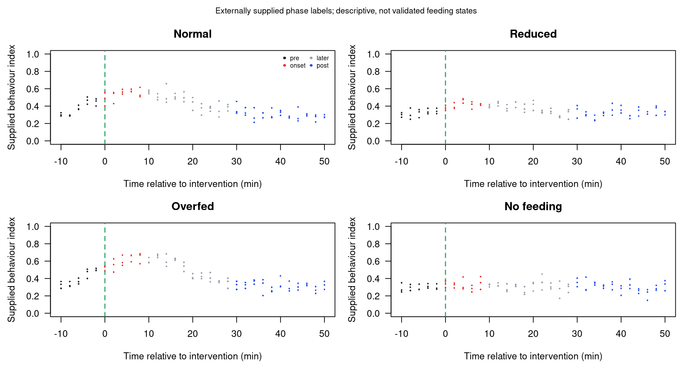
Native four-condition publication figure with supplied numerical index and labels.
Interpretation boundary: Both index and phase categories are artificially supplied; not inferred feeding truth.
Reproduce this example
# Run the fixture setup from this page's source Rmd first.
aqt_plot_feeding_states(feeding, event_time_min = 0)aqt_plot_grid_pca()
Dense-grid trajectory PCA
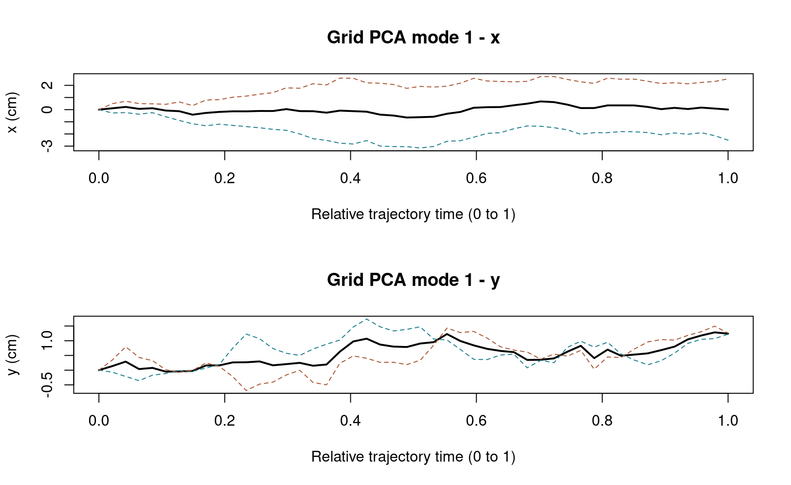
Native finite-grid PCA mode display for registered synthetic paths.
Interpretation boundary: Not sparse FPCA or biological confidence bands.
Reproduce this example
# Run the fixture setup from this page's source Rmd first.
aqt_plot_grid_pca(pca_fit, component = 1L)aqt_plot_heading_rose()
Circular heading rose
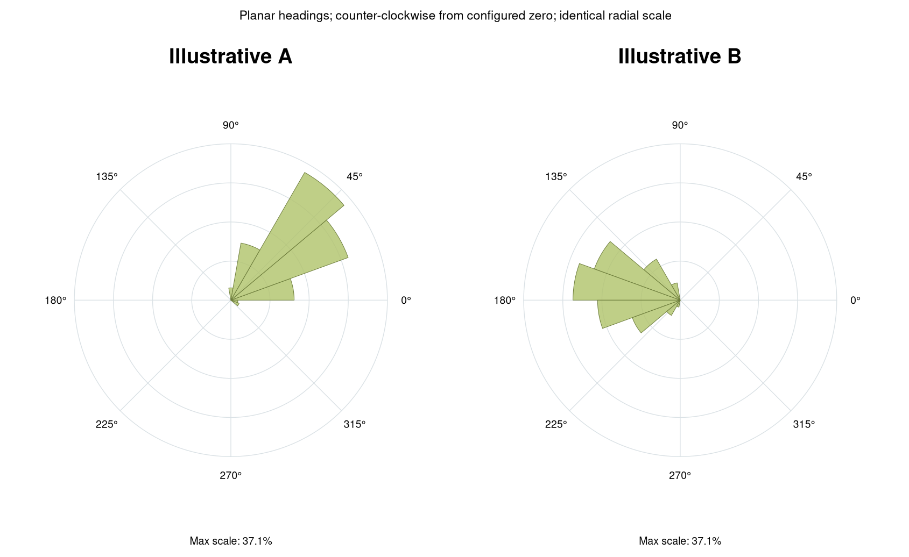
Native angular histogram with explicit mathematical direction convention.
Interpretation boundary: 2D projected headings, not measured full 3D animal orientation.
Reproduce this example
# Run the fixture setup from this page's source Rmd first.
aqt_plot_heading_rose(headings, bins = 18L)aqt_plot_joint_scene_cloud()
Joint uncertainty scenario cloud
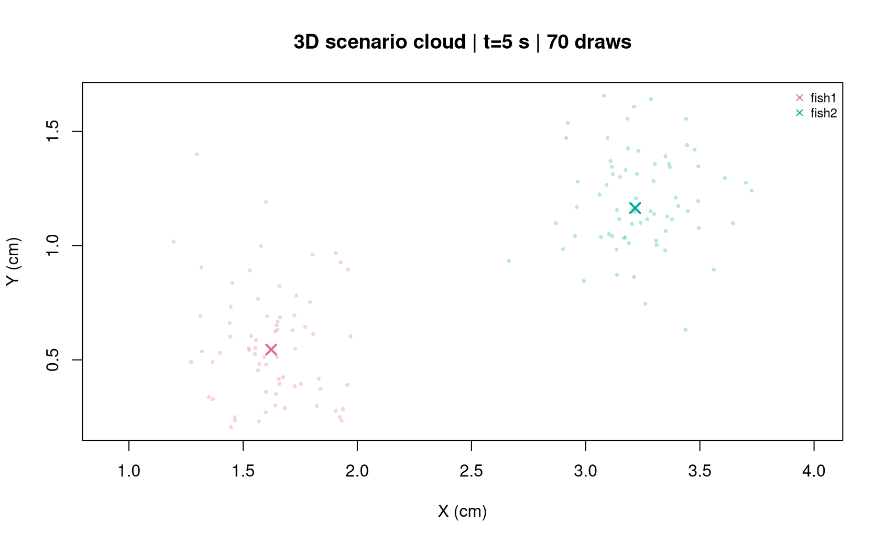
Native projected scenario cloud on a clearly labeled plot-only synthetic fixture.
Interpretation boundary: A multimodal identity cloud cannot be reduced to a calibrated Gaussian ellipse.
Reproduce this example
# Run the fixture setup from this page's source Rmd first.
aqt_plot_joint_scene_cloud(cloud, plane = 'xy')aqt_plot_joint_scene_cloud3d()
3D joint uncertainty samples
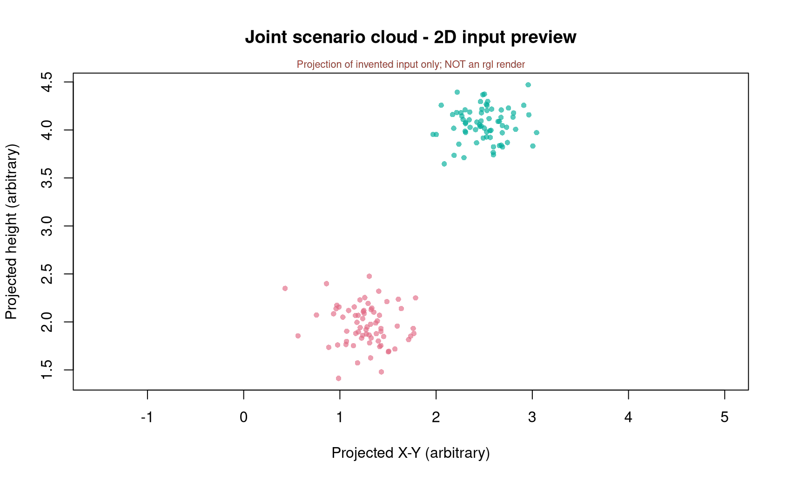
Native 3D function: aqt_plot_joint_scene_cloud3d(cloud).
This is a 2D projection of the fixture, not its native rgl output.
Optional native rgl function:
aqt_plot_joint_scene_cloud3d(cloud) (requires
rgl and physical XYZ semantics where applicable). This page
does not pretend the above projection is its native
output.
Interpretation boundary: No real optical errors or empirical posterior distributions are supplied.
Reproduce this example
# Run the fixture setup from this page's source Rmd first.
aqt_plot_joint_scene_cloud3d(cloud)aqt_plot_occupancy_timeseries()
Tank occupancy time series
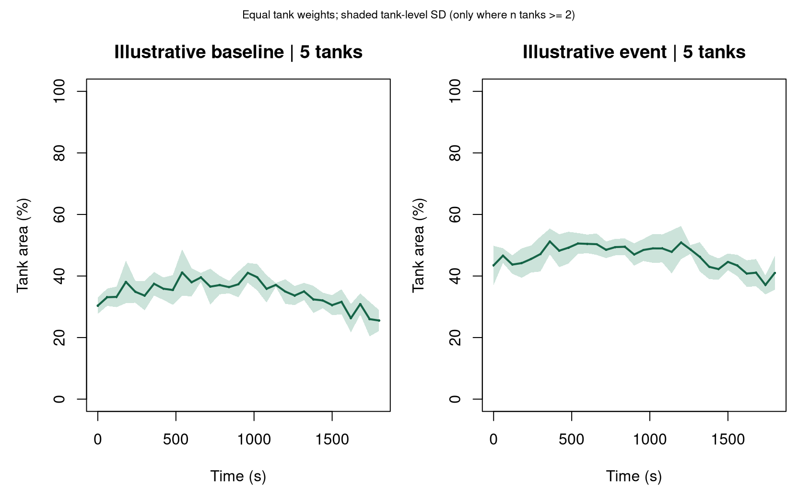
Native plot aggregating invented area fractions across tank units.
Interpretation boundary: Bands are descriptive between-tank SD, not inferential confidence intervals.
Reproduce this example
# Run the fixture setup from this page's source Rmd first.
aqt_plot_occupancy_timeseries(occupancy, time_bin_s = 60,
band = 'sd')aqt_plot_reconstruction_qc()
Stereo reconstruction QC
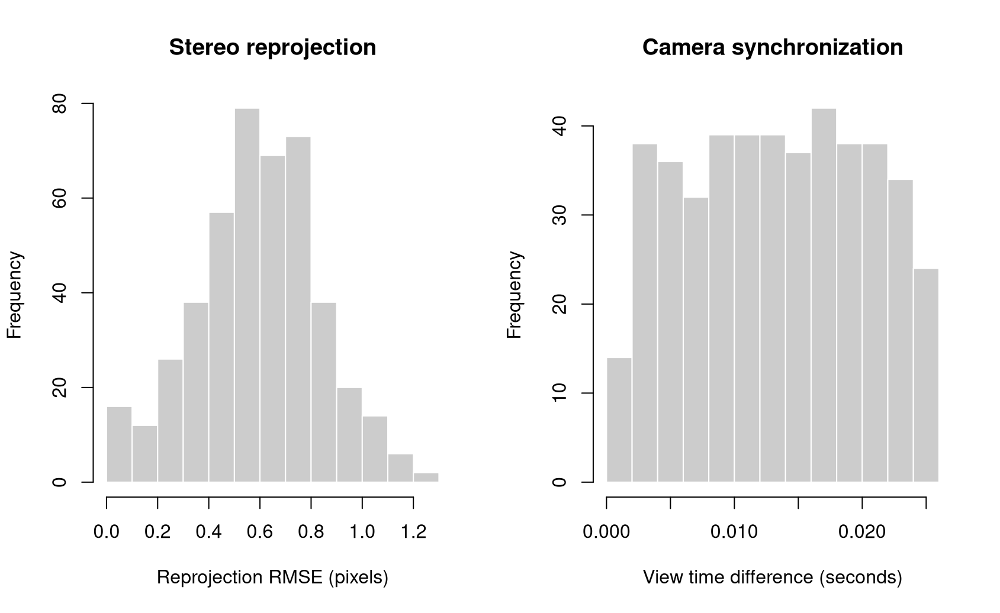
Native two-panel RMSE/time-skew distribution from synthetic QC columns.
Interpretation boundary: Small reprojection error does not prove underwater positional accuracy.
Reproduce this example
# Run the fixture setup from this page's source Rmd first.
aqt_plot_reconstruction_qc(qc_tracks)aqt_plot_recurrence()
Trajectory recurrence matrix
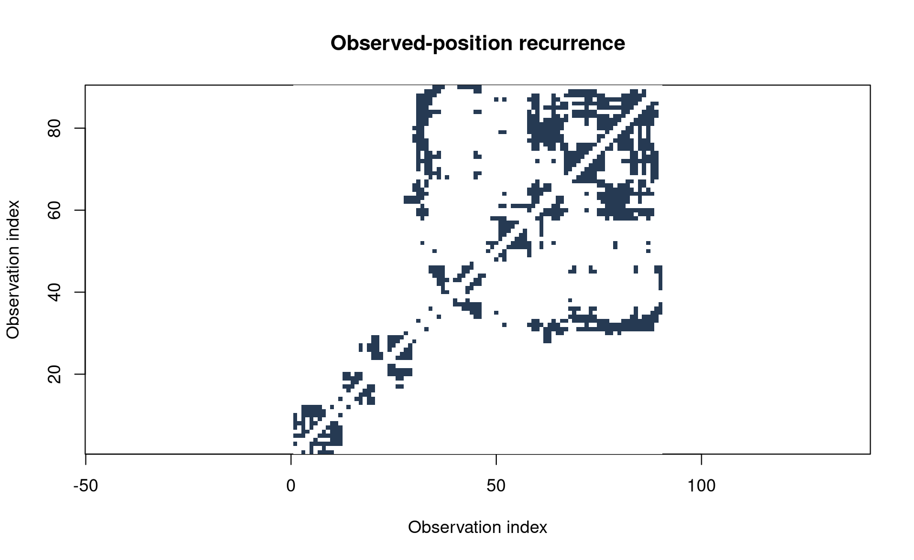
Native recurrence image for the observed-position proximity rule.
Interpretation boundary: This is not inferred animal stereotypy or an ethological diagnosis.
Reproduce this example
# Run the fixture setup from this page's source Rmd first.
aqt_plot_recurrence(recurrence)aqt_plot_school3d()
Fish-school spatial snapshot
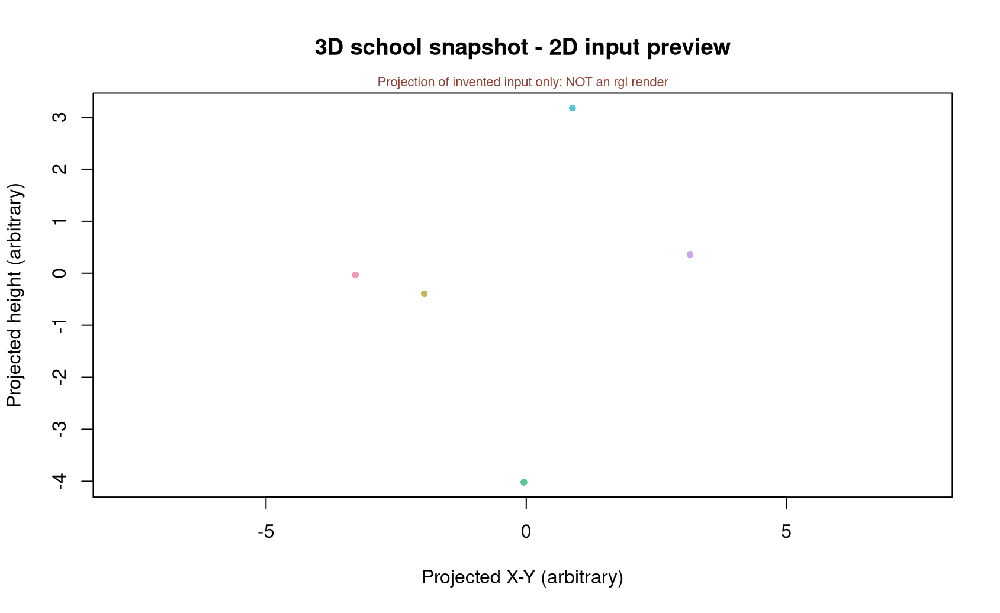
Native 3D function:
aqt_plot_school3d(toy3, 'S01', 'SIM', 5). The thumbnail is
an input projection only. Optional native rgl function:
aqt_plot_school3d(toy3, 'S01', 'SIM', 5) (requires
rgl and physical XYZ semantics where applicable). This page
does not pretend the above projection is its native
output.
Interpretation boundary: Camera-scoped labels are not independently established identities.
Reproduce this example
# Run the fixture setup from this page's source Rmd first.
aqt_plot_school3d(toy3, 'S01', 'SIM', 5)aqt_plot_school_dynamics()
School geometry over time
Native school-radius or distance trend computed from simultaneously observed simulated fish.
Interpretation boundary: Movement group structure can be sensitive to observed fish count and tracking loss.
Adjust parameters in the synthetic browser playground — Change synthetic group trajectories. Browser previews are not native R plots; the linked R recipe executes the released function.
Reproduce this example
# Run the fixture setup from this page's source Rmd first.
aqt_plot_school_dynamics(group_summary, "S01", "SIM")aqt_plot_speed_response()
Event-aligned speed changes
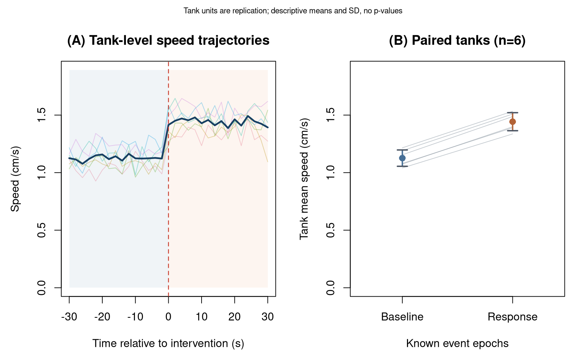
Native two-panel tank-aggregated speed figure with synthetic tank identifiers.
Interpretation boundary: Illustrative speed and event times are not real treatment outcomes.
Reproduce this example
# Run the fixture setup from this page's source Rmd first.
aqt_plot_speed_response(speed_data, event_time_s = 0,
baseline_s = c(-30, 0), response_s = c(0, 30),
speed_unit = 'cm/s', time_bin_s = 2)aqt_plot_tank_changes()
Tank-level before/after comparisons
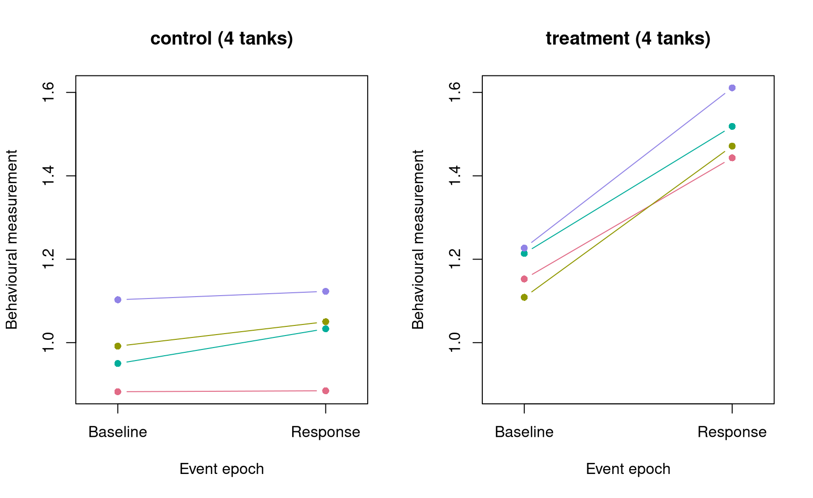
Native paired tank trajectories, preserving the experiment’s unit of replication.
Interpretation boundary: Independent tank labels are invented and do not create causal identification.
Reproduce this example
# Run the fixture setup from this page's source Rmd first.
aqt_plot_tank_changes(tank_fit)aqt_plot_tank_projection()
Physical XYZ scene projection
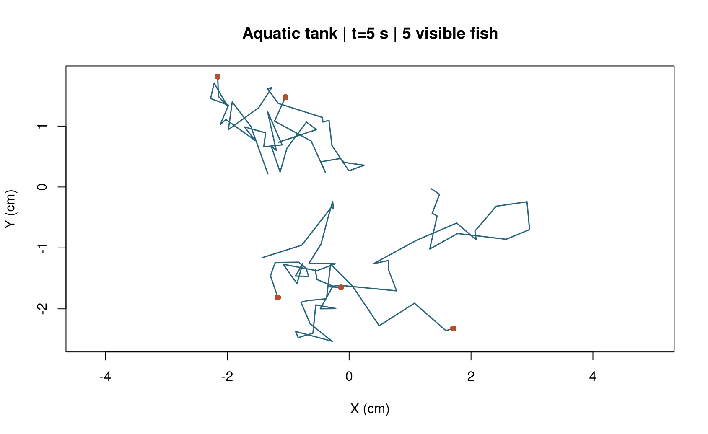
Native orthographic projection derived from complete synthetic XYZ input.
Interpretation boundary: An existing depth coordinate is required; the plot does not infer one from video.
Reproduce this example
# Run the fixture setup from this page's source Rmd first.
aqt_plot_tank_projection(scene3, plane = 'xy')aqt_plot_tank_scene3d()
3D tank scene with movement tails
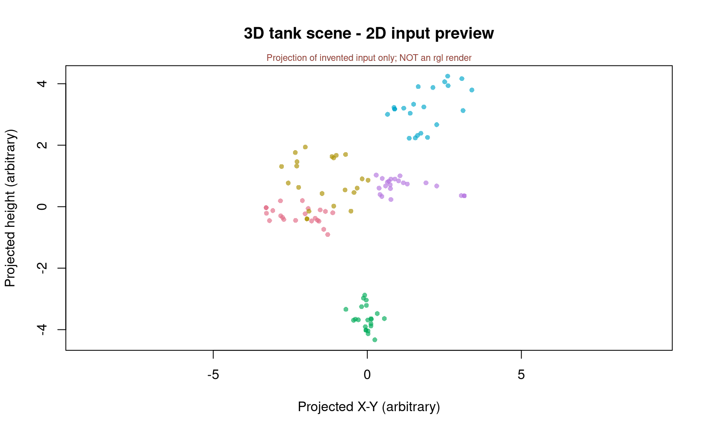
Native 3D function: aqt_plot_tank_scene3d(scene3);
projected teaching preview is not an actual rgl scene. Optional
native rgl function: aqt_plot_tank_scene3d(scene3)
(requires rgl and physical XYZ semantics where applicable).
This page does not pretend the above projection is its
native output.
Interpretation boundary: Real physical XYZ and independently measured optics are still necessary.
Reproduce this example
# Run the fixture setup from this page's source Rmd first.
aqt_plot_tank_scene3d(scene3)aqt_plot_trajectory_storyboard3d()
Four-frame 3D storyboard
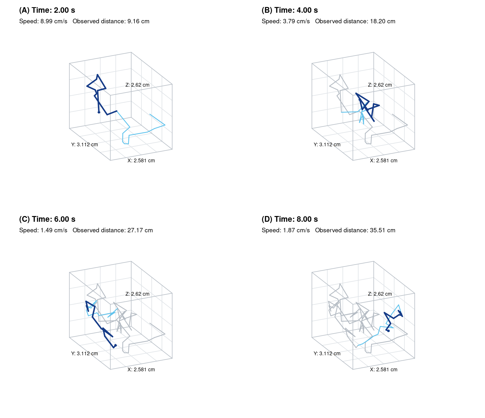
Native four-panel axonometric base-R figure; uses the supplied synthetic XYZ.
Interpretation boundary: Recency bands summarize observed segments only; unobserved travel is not estimated.
Reproduce this example
# Run the fixture setup from this page's source Rmd first.
aqt_plot_trajectory_storyboard3d(one3,
times_s = c(2, 4, 6, 8),
recent_s = 1, max_gap_s = .11, max_age_s = .11)aqt_plot_voxel3d()
3D voxel occupancy
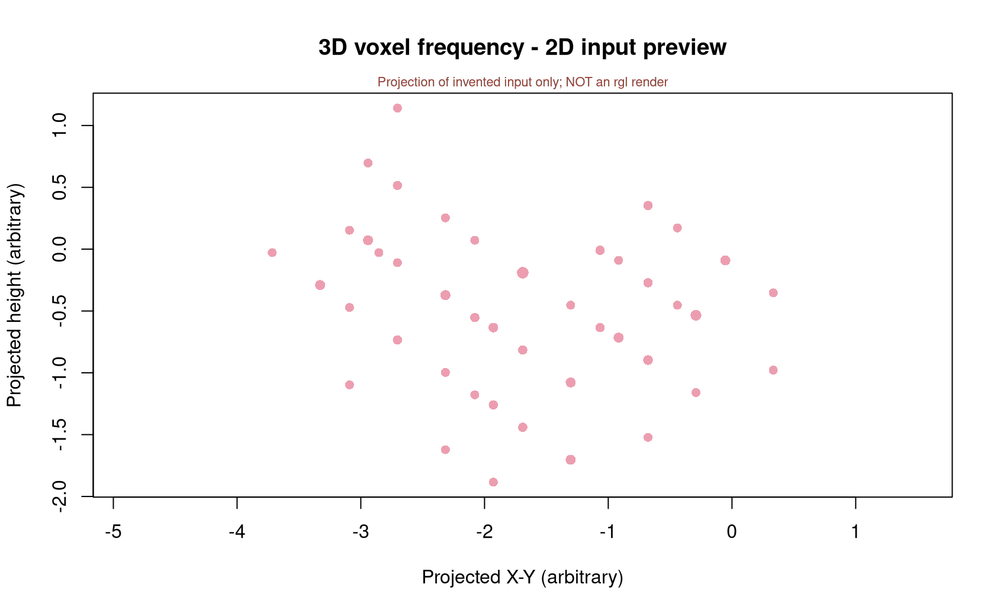
Native 3D function: aqt_plot_voxel3d(voxels). Projection
shows synthetic observed sample frequencies, not the actual optional rgl
output. Optional native rgl function:
aqt_plot_voxel3d(voxels) (requires rgl and
physical XYZ semantics where applicable). This page does
not pretend the above projection is its native
output.
Interpretation boundary: Voxels represent counted sample points, not inferred continuous residence time.
Reproduce this example
# Run the fixture setup from this page's source Rmd first.
aqt_plot_voxel3d(voxels)Reproducibility and limitations
The complete synthetic fixture setup, all 22 plot
calls and the six projected-preview routines are included in this
website article’s source. Follow the individual function reference links
for argument specifications. Only the 16 plots marked Actual
package output are screenshots generated by invoking their own
aqt_plot_* R function in the website build. The other six
demonstrate only the input geometry and should be opened locally with
optional rgl for native 3D.
Website-development source (moving main branch): plot function atlas Rmd on GitHub. For a shorter introduction, see the five-figure workbook, the interactive synthetic teaching lab, and the capabilities and validation matrix.